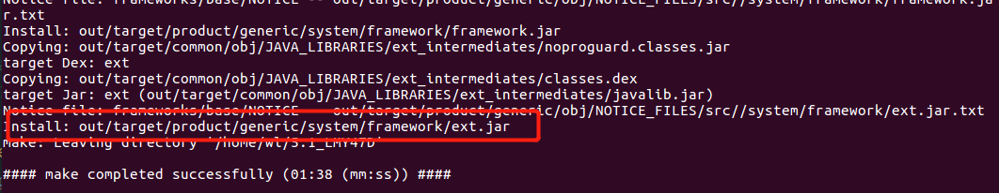
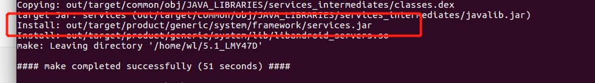

在Framework中添加自定义系统服务
流程
aidl
- frameworks/base/core/java/android/app/ISystemStatusManager.aidl
1 |
|
修改mk
frameworks/base/Android.mk
加到LOCAL_SRC_FILES后面，注意看清楚是哪个LOCAL_SRC_FILES
1 | ## READ ME: ######################################################## |
service实现
- frameworks/base/services/core/java/com/android/server/SystemStatusManagerService.java
1 | package com.android.server; |
manager
- frameworks/base/core/java/android/app/SystemStatusManager.java
1 | package android.app; |
service 名称定义
- frameworks/base/core/java/android/content/Context.java中添加service名称定义
1 | /** |
添加服务
- frameworks/base/services/java/com/android/server/SystemServer.java
1 | private void startOtherServices() {// 在startOtherServices方法里面添加 |
注册服务
- frameworks/base/core/java/android/app/ContextImpl.java
1 | static { // 在ｓｔａｔｉｃ方法里面添加 |
编译 jar包
编译前需要先
make update-api,然后正常编译即可!!这一步必须要,否则会报错1
2
3
4
5
6
7
8
9
10
11
12
13
14see build/core/apicheck_msg_current.txt
******************************
You have tried to change the API from what has been previously approved.
To make these errors go away, you have two choices:
1) You can add "@hide" javadoc comments to the methods, etc. listed in the
errors above.
2) You can update current.txt by executing the following command:
make update-api
To submit the revised current.txt to the main Android repository,
you will need approval.
******************************- 谷歌对于所有的类和API，分为开方和非开放两种，而开放的类和API，可以通过“Javadoc标签”与源码同步生成“程序的开发文档”；当我们修改或者添加一个新的API时，我们有两种方案可以避免出现上述错误.
- 其一是将该接口加上 非公开的标签：/*{@hide}/
- 再者可以在修改后执行：make update-api(公开)，将修改内容与API的doc文件更新到一致
- 修改后相应API文件后，在base库下面会产生“.current.txt”文件的差异
- 谷歌对于所有的类和API，分为开方和非开放两种，而开放的类和API，可以通过“Javadoc标签”与源码同步生成“程序的开发文档”；当我们修改或者添加一个新的API时，我们有两种方案可以避免出现上述错误.
正式编译
1
2
3
4
5
6
7
8
9
10
11
12cd xx/ //进入源码目录
source build/envsetup.sh //初始化编译环境
cd framework/base //进入 framework/base
mmm core/res //生成framework-res.apk
******
cd xxx/framework/base
mm -B //生成framework.jar
*******
cd xxx/framework/base/services/java
mm文件位置
- xxx/out/target/product/generic/system/framework
图示
编译framework-res.apk

编译framework.jar
编译service.jar

小结
编译framework-res.apk、framework.jar和services.jar,push到/system/framework后,重启手机
提示没有权限的话
- adb root(前提是：手机root了)
- adb remount，重新挂载系统分区(前提是：adb root)
- adb shell “mount -o rw,remount /system”
- 注意：有的系统编译framework后还生成了secondary_framework.jar，也需要push
调用
1
2
3
4
5
6
7
8SystemStatusManager mManager = (SystemStatusManager) getSystemService(Context.SYSTEM_STATUS_SERVICE);
try {
String[] infos = mManager.getSystemStatus();
Log.i("SystemStatus", "SystemStatus Date:" + infos[0] + "\nVersion:" +infos[1]);
} catch (Exception e) {
e.printStackTrace();
}
标注
- 参考自 在android framework中添加自定义系统服务
- 后面又看到一篇，和参考的博客有些不一样。所以也贴出来 Android自定义系统服务
- 本博客基于
基于Android版本 5.1_LMY47D
- 本文链接：https://www.wl960127.top/posts/28791/
- 版权声明：本站内容均为个人学习笔记,不涉及商业用途，仅提供学习参考,第三方摘录已署名链接,未署名请评论添加,转载署名来源即可。
分享